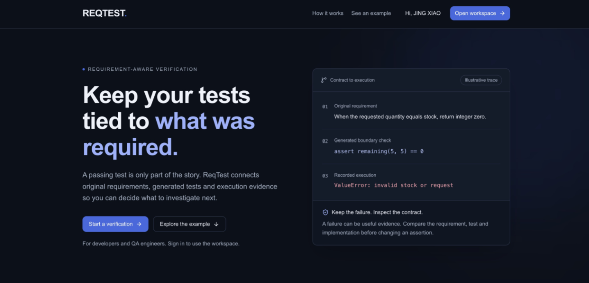
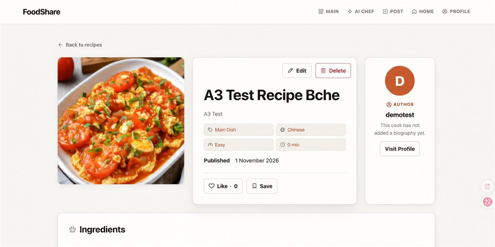

01 / FLAGSHIP · INDEPENDENT
ChainTrust
智能合约发布风险与审查工作台。独立完成产品边界、全栈架构、规则扫描、LLM 风险简报和 Sepolia 哈希登记链路。
查看重点案例 →
Release Risk Intelligence真实项目截图
Project Case Studies
以下案例按背景、个人职责、技术栈、架构、难点、解决方案和验证结果展开。团队项目均明确标注“我负责”与“团队完成”。
智能合约发布风险与审查工作台。独立完成产品边界、全栈架构、规则扫描、LLM 风险简报和 Sepolia 哈希登记链路。
查看重点案例 →



